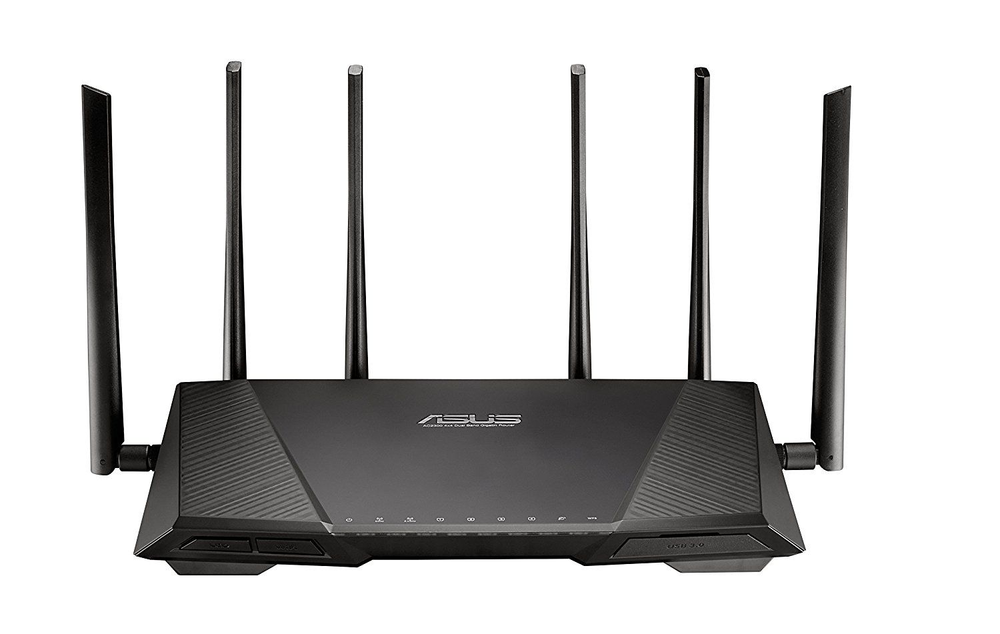
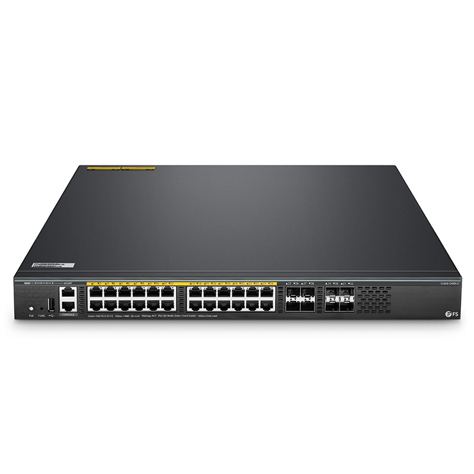
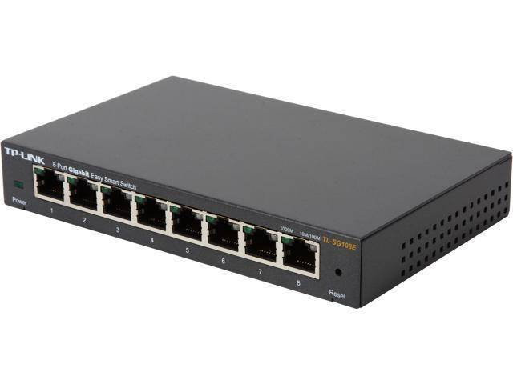
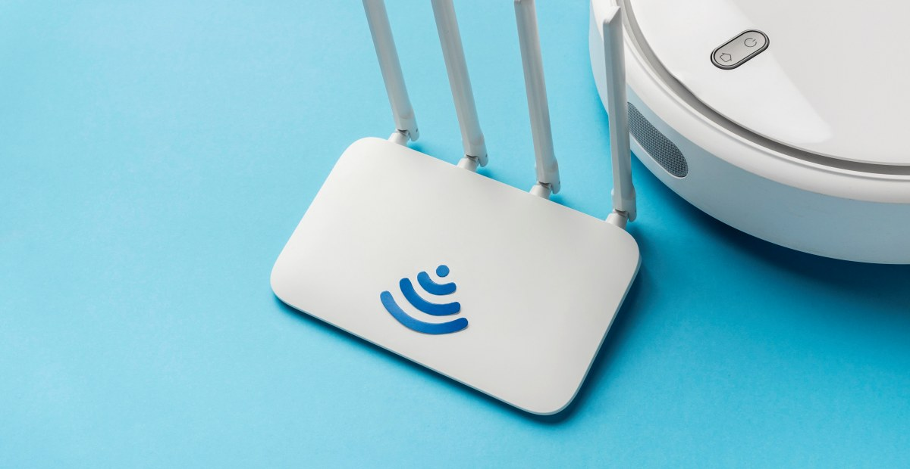

MACAM-MACAM PERANGKAT JARKOM
Terdapat beberapa perangkat atau komponen jaringan kompter yang memiliki fungsi masing-masing dalam membangun Jaringan Komputer antara lain
ROUTER

Router adalah perangkat yang menghubungkan jaringan lokal dengan jaringan eksternal (seperti internet). Router juga berfungsi mengarahkan lalu lintas data antar jaringan komputer.
SWITCH

Switch adalah perangkat yang sama dengan Hub. Switch berfungsi untuk melakukan komunikasi antar perangkat dalam jaringan satu sama lain.
HUB

Hub adalah perangkat yang menghubungkan perangkat lain dalam jaringan tanpa memperhatikan alamat tujuan. Perbedaan Hub dan switch yaitu, hub biasanya kurang efisien dari pada switch.
Accest Point

Access Point adalah perangkat yang berfungsi untuk menyediakan akses nirkabel ke jaringan.
Wi-Fi

(Wi-Fi) adalah media transmisi yang berbasis gelombang elektromagnetik (radio) untuk mentransfer data tanpa menggunakan kabel fisik (Nirakabel). Selain Wi-Fi teknologi nirkabel lain yang banyak digunakan yaitu Bloototh.
Kabel Ethernet

Ethernet adalah jaringan komputer menggunakan kabel yang memungkinkan transmisi data antar komputer dan perangkat lainnya yang berada dalam sebuah local area network (LAN).
Kabel Fiber Optic

Fiber optik adalah jenis kabel yang terbuat dari serat plastik dan kaca halus, yang berfungsi untuk menghubungkan antar perangkat maupun pengguna dalam lingkup wilayah tertentu.
Browser Compatibility
This template has been tested in the following browsers:
- Internet Explorer 9
- FireFox 25
- Google Chrome 31